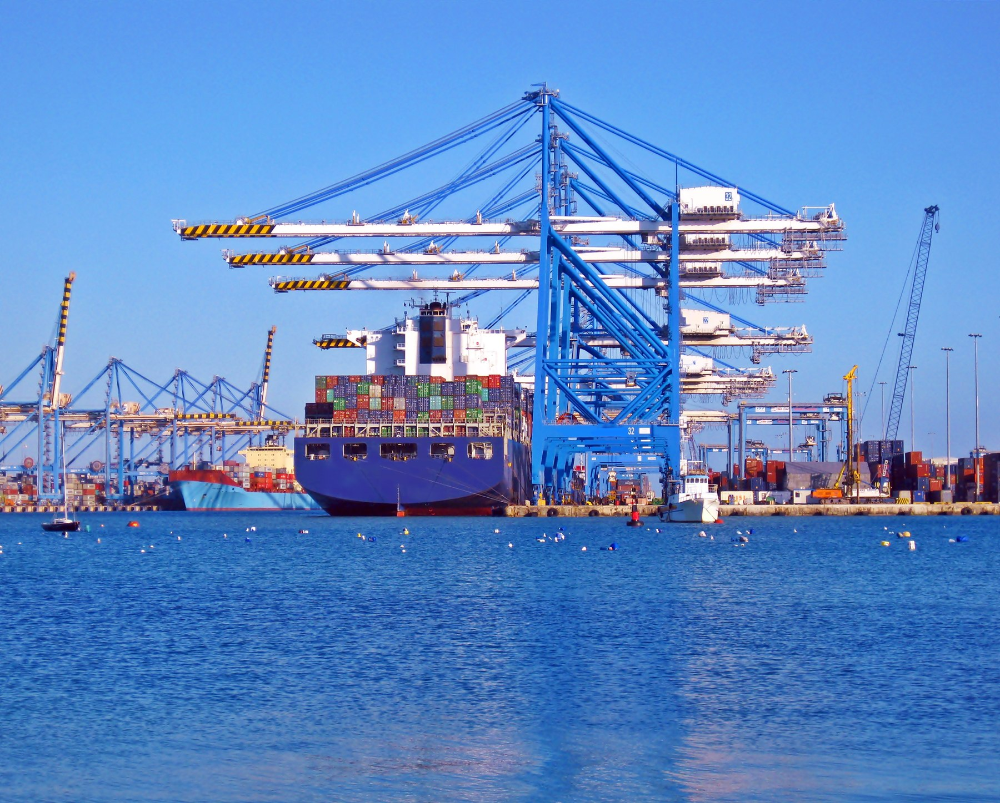

01 / DW ULV G50
Solvent-free marine coating
High-solids corrosion protection for vessel structures, tanks and hull applications.
- High solids
- High-build application
- Conventional spray equipment
- Ambient curing

Advanced coatings.
Lower emissions.
Global support.
High-performance Dowill marine coatings and integrated green coating solutions for shipowners and shipyards worldwide.
DW Marincoats is the overseas market operation and customer service platform for Dowill marine coatings. We connect product expertise, reliable supply and on-site technical support across the coating lifecycle.


A complete marine coating range, with focused solvent-free solutions for corrosion protection and underwater hull care.
High-solids corrosion protection for vessel structures, tanks and hull applications.

Hard-surface protection for underwater hulls and in-service cleaning.

High-build application and ambient curing, with conventional spray equipment. Coating technology developed around the realities of the shipyard.
Build the specified coating thickness with fewer application passes.
A formulation designed to cure in ambient conditions.

See how DW G50 was applied to the outer hull, waterline and cargo holds of Dalian Maritime University’s ocean-going training vessel.
View case studyDowill brings research, production and testing together to support dependable marine coating supply.


Sales and service branches and agency partners connect customers across key marine markets.
Southeast Asia
Northeast Asia
Asia
Mediterranean
Northern Europe
Inside our manufacturing, technology and service capabilities.
Talk to our team about your vessel, operating conditions and next project.